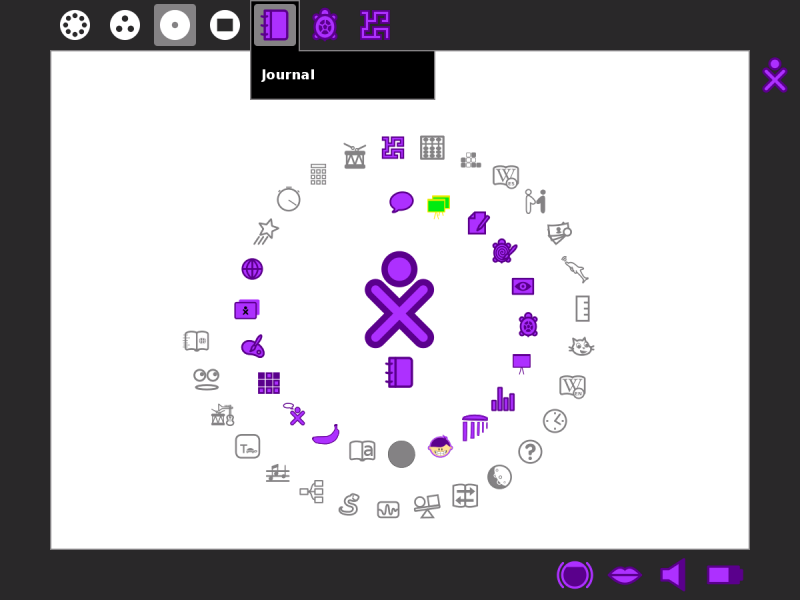
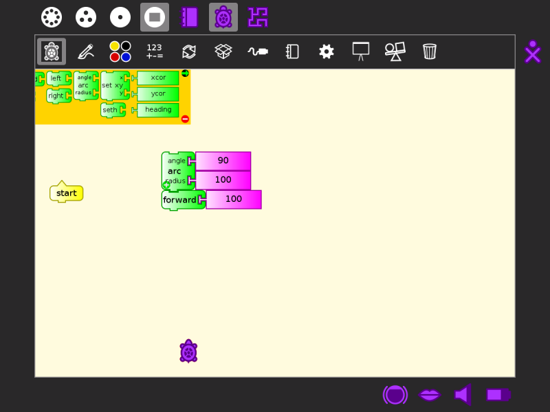
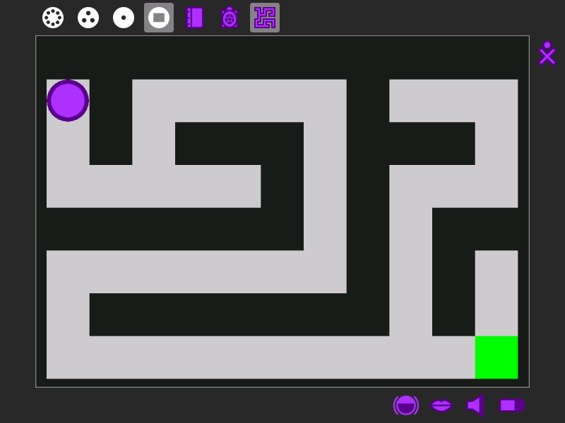

Switching Activities¶
You can switch between Activities in two ways:
In the Frame, click the icon of the Activity you want to switch to.
Hold down alt + tab at the same time to cycle through your open Activities until you reach the one you want.

pressing alt + tab again

pressing alt + tab again

Note
You can use the Clipboard and the Journal to move data between Activities.